User guide
How to use GLPMGR
A friendly walk through everything GLPMGR does, one step at a time. Take it at your own pace. Nothing here is medical advice, and the app works just as well if you only use the parts you need.
Getting started
There’s no account to create. Open GLPMGR and a short walkthrough asks how you take your medicine (injections, tablets or both) and shows you around. You can see it again any time from Settings → About → Replay Walkthrough.
Three things are worth doing first:
- Set up your dosing schedule so GLPMGR knows when your next dose is due (see Your dosing schedule).
- Allow notifications when asked, if you’d like reminders. You can change this later in your iPhone’s Settings.
- Record your weight if you want to see your progress. It’s entirely optional.
The app has four tabs along the bottom (or the top on iPad): Today, Journey, Symptoms and Settings.
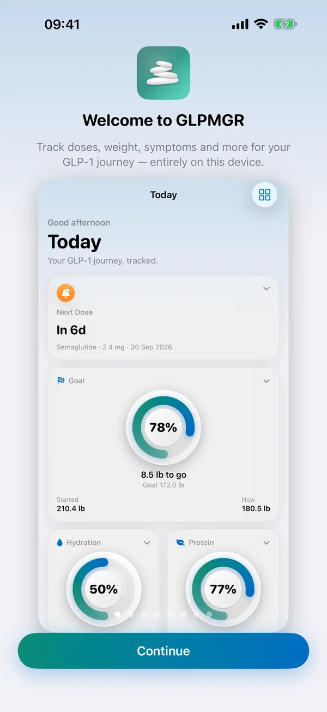
The Today screen
Today is your at-a-glance page. Each card (we call them tiles) shows one thing, such as your next dose, your goal, water, protein or your last injection site.
- See more: tap the small arrow on a tile to open it up, and tap again to close it.
- Change a tile: touch and hold it for options to make it smaller or larger, move it, hide it, or View Trends for a page of charts.
- Arrange everything: tap the grid button at the top right (Customise Today). Drag tiles to reorder them, tap the eye to hide or show one, and use ··· to change a tile’s size. Reset to Default puts everything back.
When a dose is due, the Next Dose tile moves to the top and stays there until you’ve recorded it.
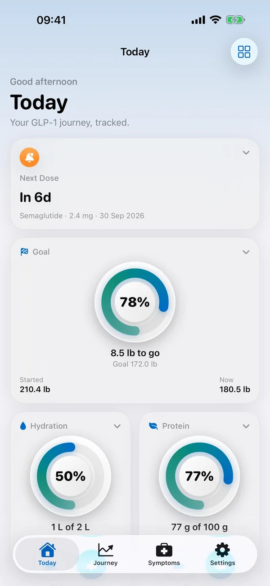
Recording a dose
Tap Record Injection on Today or Journey, or tap the Next Dose tile when a dose is due.
- Check the medicine and dose. If you have a schedule, the dose is filled in for you, including the right step if you’re stepping up.
- Choose the injection site from the areas your medicine’s manufacturer lists (see Injection sites).
- Change the date and time if you’re recording it later, add any notes, and tap Save.
You can also log your weight at the same time with Log weight with this injection. If you take a tablet, logging works the same way, just without an injection site.
Made a mistake? Open the entry from Journey → Timeline to change or delete it.
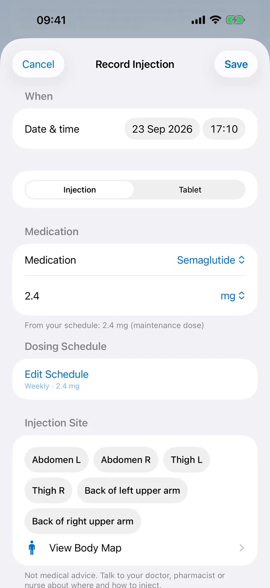
Your dosing schedule and dose steps
Go to Settings → Dosing Schedule and tap to add or edit a schedule.
- Medication and dose: the dose you’ll stay on (your maintenance dose).
- Frequency: how often it Repeats (for example Weekly), the date you’re Starting and your Reminder time.
- Dose steps: most GLP-1 medicines start low and step up over a few weeks (doctors call this titration). Turn on Use dose steps, then add each step and how many doses you take at it. GLPMGR moves you to the next step automatically as you log doses. Always check it against what your doctor, nurse or pharmacist told you.
- Supply: turn on Track pen/vial supply and enter how many doses you have. Each logged dose counts down, and GLPMGR lets you know when you’re running low. Tap Refill Now when you get more.
GLPMGR never works out or recommends a dose. It only follows the schedule you enter.
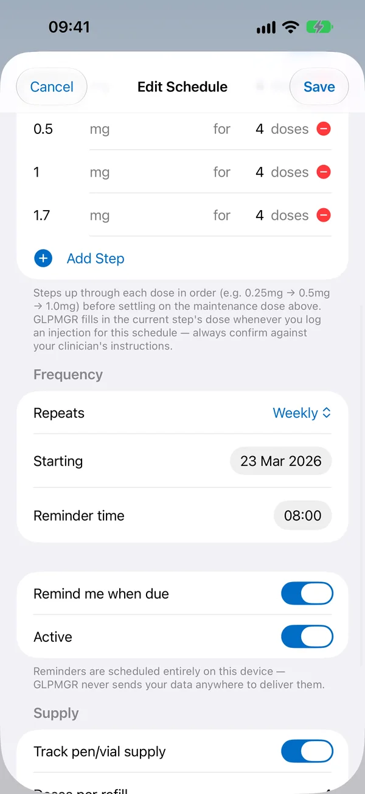
Reminders
GLPMGR can remind you about:
- Doses, at the reminder time in your schedule (turn on Remind me when due).
- Low supply, when your pen, vial or prescription is running low.
- Water, through the day if you like (Settings → Hydration → Remind me to drink). It stops once you’ve reached your goal.
- A weekly weigh-in, at the day and time you pick (Settings → Maintenance Tools). It never mentions your weight.
Reminders are set up on your device, so nothing is sent from a server. Not getting them? Check that notifications for GLPMGR are on in your iPhone’s Settings → Notifications.
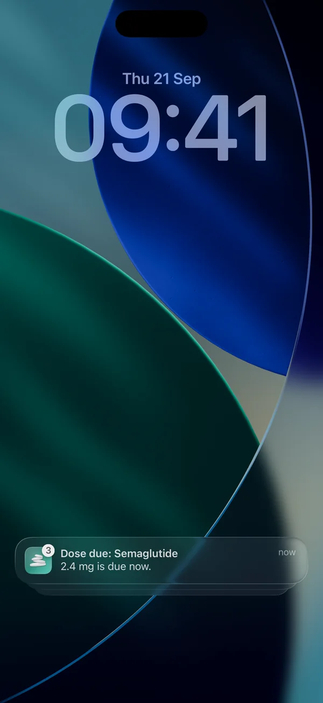
Injection sites and the body map
GLPMGR only offers the injection areas your medicine’s manufacturer lists for your region, taken from the official leaflet. Check or change your region in Settings → Injection Site Guidance.
With Premium, the body map shows those areas on a simple figure, shaded by how often you’ve used each one, so you can see your own history at a glance. Open it from the Injection Site tile or View Body Map when recording a dose.
GLPMGR never tells you where to inject next, and it isn’t medical advice. Your doctor, nurse or pharmacist can show you how and where to inject. See where each list comes from.
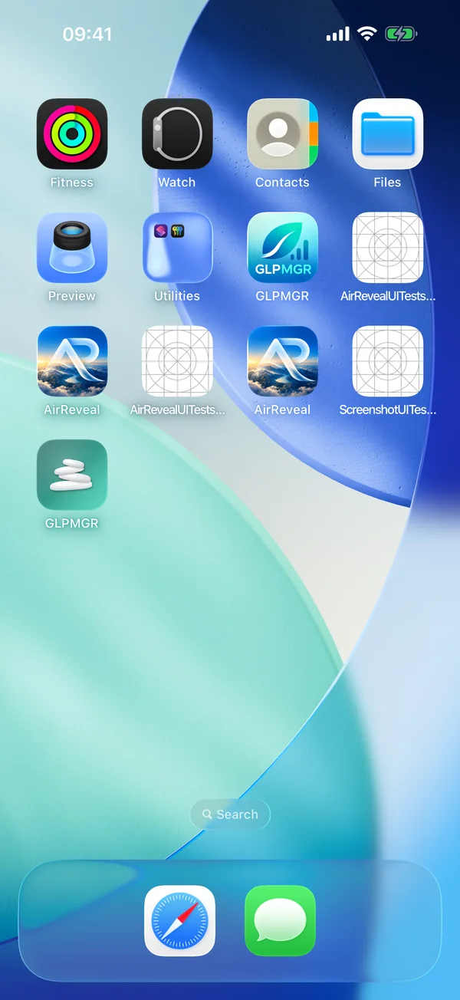
Weight and your goal
Tap Record Weight on Today or Journey. Choose kilograms, pounds or stones in Settings → Units & Defaults.
If you’d like a goal, set one in Settings → Goal Weight. It’s yours to choose, and GLPMGR doesn’t suggest a number. Everyone’s body responds differently, and weight naturally goes up and down from day to day, so the trend over weeks tells you more than any single weigh-in.
Touch and hold the weight or goal tile and choose View Trends to see your weight over time with each dose marked. Once you reach your goal, Maintenance Tools can show your recent average next to a range you choose.
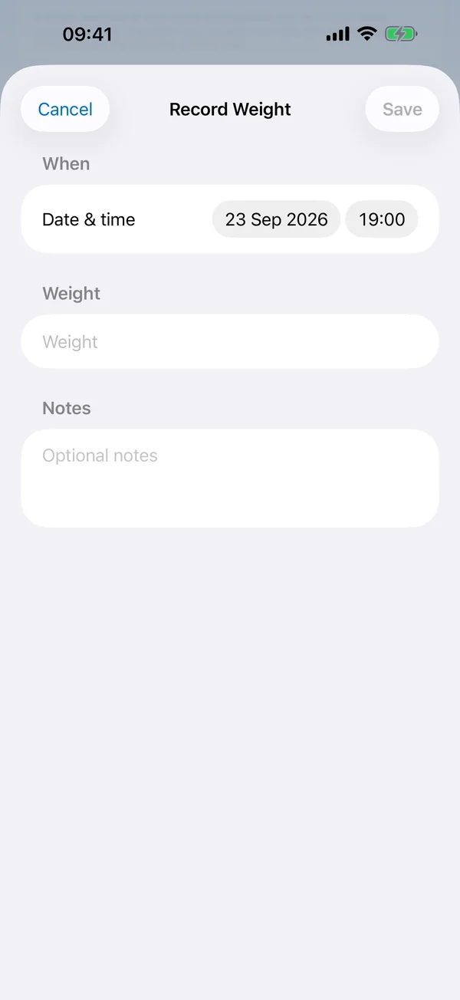
Side effects and symptoms
Side effects such as nausea, tiredness or constipation are common, especially after a dose goes up. They’re not a sign you’re doing anything wrong.
Go to the Symptoms tab and tap Log Symptom. Pick what you’re feeling, how strong it is (Severity), when, and any notes. Turn on Relate to most recent injection if you want to see it alongside that dose.
With Premium, Journey shows which days after a dose your symptoms tend to happen, from your own log. It’s a record to talk through with your doctor or nurse, not a diagnosis. If a side effect worries you, please speak to them.
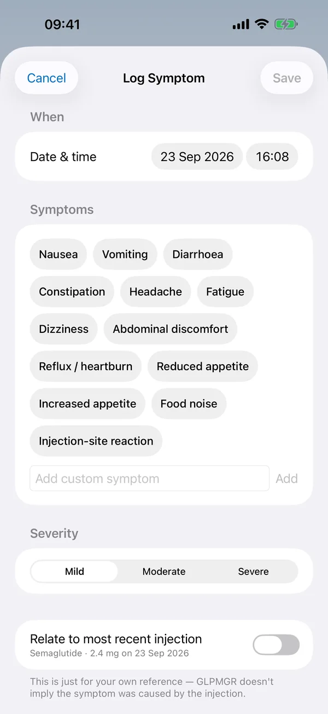
Water and protein
Water is free. Turn it on in Settings → Hydration, set a daily goal and glass size, then tap + on the Hydration tile each time you have a drink.
Protein is part of Premium. Turn it on in Settings → Protein, set a daily goal and a usual serving, then tap + on the Protein tile to add a serving.
To read protein off a food label, open the Protein tile and tap Scan a Food Label. Take or choose a photo of the nutrition panel, pick the figure that fits (per portion or per 100 g), say how much you had, check the total and tap Add. The photo is read on your device and isn’t kept.
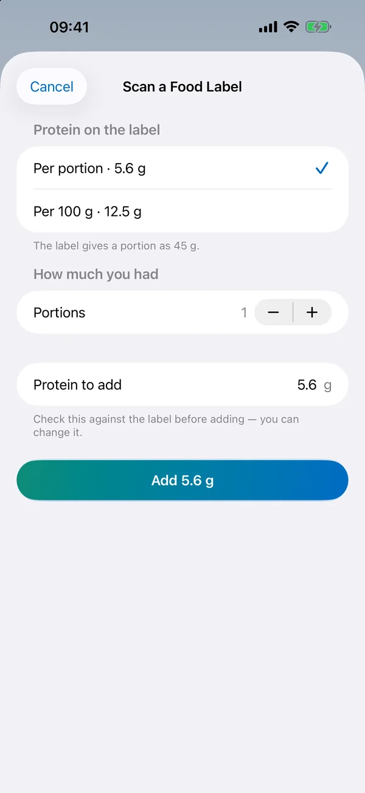
Blood glucose
If you check your blood glucose, turn on Settings → Blood Glucose. You can type readings in from the Blood Glucose tile, or read them from Apple Health if your meter or sensor saves them there.
Choose mmol/L or mg/dL in Settings → Units & Defaults. With Premium you get blood glucose charts next to your doses. GLPMGR doesn’t judge readings as good or bad. Talk to your doctor or nurse about what your numbers mean for you.
Journey and trends
The Journey tab brings everything together: charts of your weight and doses, your photos and measurements, and a Timeline of every entry you can search. Use the time range at the top to look back over weeks or months.
Any tile with trends has a View Trends page, with averages by week or month. With Premium, the Estimated Medication Level chart shows roughly how much medicine may be in your body between doses. It’s an estimate from your logged doses, not a blood test.
Share Progress makes a picture of your starting and current weight and the injections you’ve logged, for you to share only if you want to.
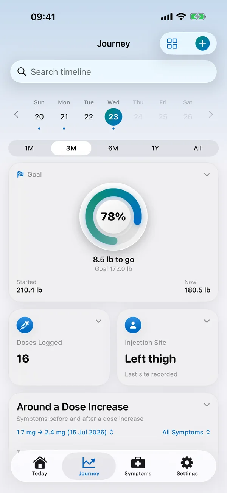
Progress photos and measurements
With Premium you can add progress photos and body measurements from Journey (Add Photo, Log Measurements).
Photos are private: they’re stored encrypted on your device and stay hidden until you unlock them with Face ID, Touch ID or your passcode. They lock again when you leave the app, or straight away with Lock photos. You can turn the lock off in Settings → Lock Progress Photos.
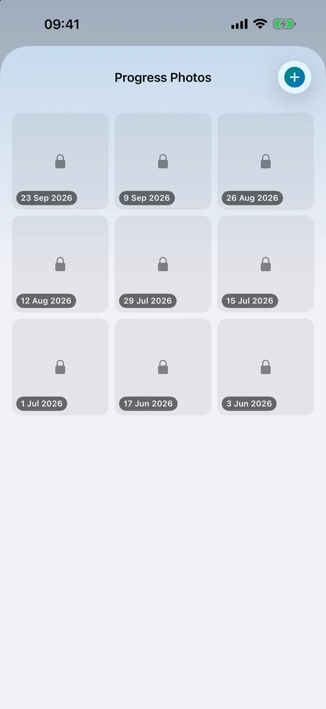
Apple Watch, widgets and the Lock Screen
The Apple Watch app shows how long until your next dose and your recent weight trend, and lets you log your weight or a drink of water from your wrist. It updates from your iPhone automatically.
With Premium, add the Next Dose widget to your Home Screen or Lock Screen (touch and hold an empty area, tap Edit, then Add Widget), and see a live countdown to your next dose on the Lock Screen.
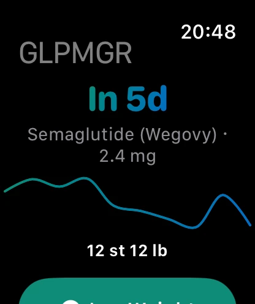
Backing up and sharing with your doctor
Your data stays on your device and isn’t included in iCloud or computer backups, so it’s worth making your own backup now and then. Go to Settings → Data & Backup:
- Back Up Everything (JSON) saves a complete copy, including photos and settings, locked with a password you choose. Keep the password safe: it can’t be recovered. Turn on Remind Me to Back Up for a gentle nudge.
- Restore from a Backup (JSON) brings it back, on this device or a new one.
- Export Doctor Report (PDF) (Premium) makes a tidy summary to share or print for an appointment.
- Export a Spreadsheet (CSV) gives your entries as a file that opens in Numbers or Excel.
You choose where every file goes, such as Files, AirDrop or email. Only the backup is password-protected, so keep the others somewhere private.
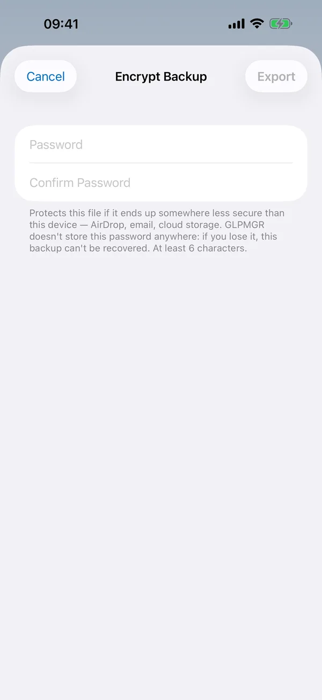
Apple Health
Apple Health is off until you turn it on in Settings → Apple Health. You can save your weights to Health, and show nutrition (such as protein and water from a food-tracking app) on Today. Blood glucose can be read from Health too (see Blood glucose).
iPhone asks your permission the first time. To change it later, open the Health app, tap your picture, then Apps and GLPMGR.
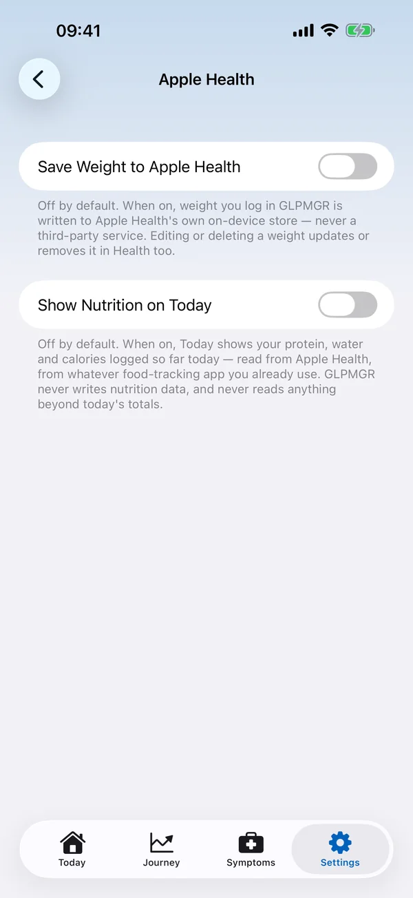
Getting help
New to some of the words? Words explained sets them out in plain English (also in the app under Settings → Words Explained). Our questions and answers and Support page cover the rest, or email info@isafenet.app. We read every message.
GLPMGR is a personal tracking tool, not a medical device, and it doesn’t give medical advice. For anything about your treatment, your doctor, nurse or pharmacist is the best person to ask.